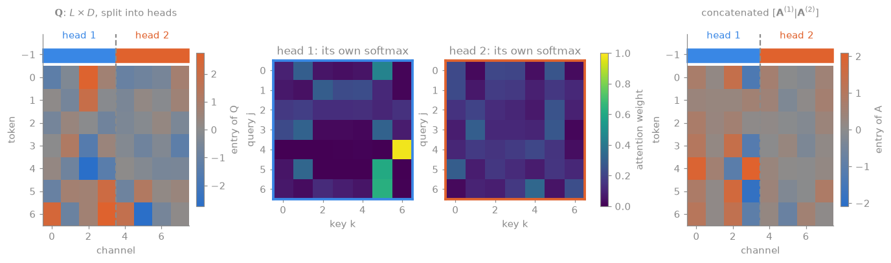
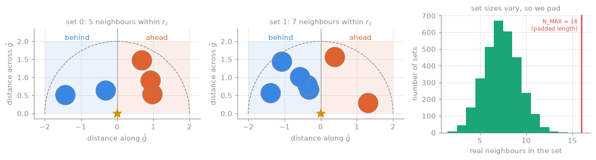
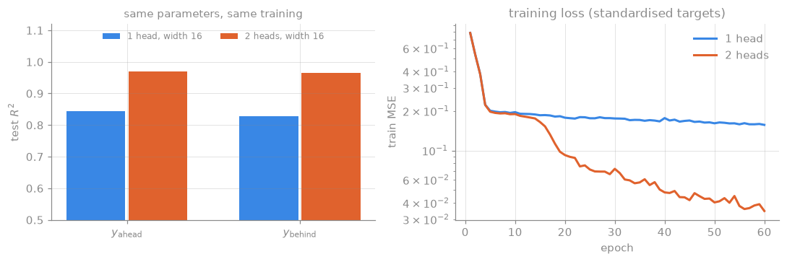
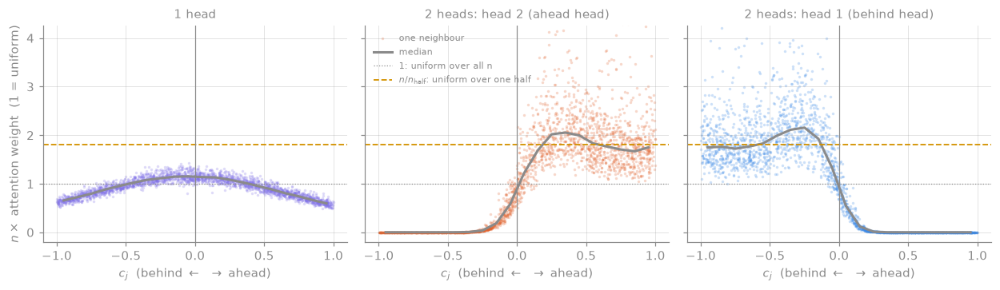
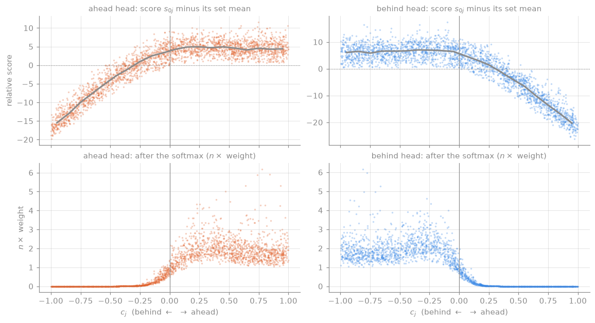
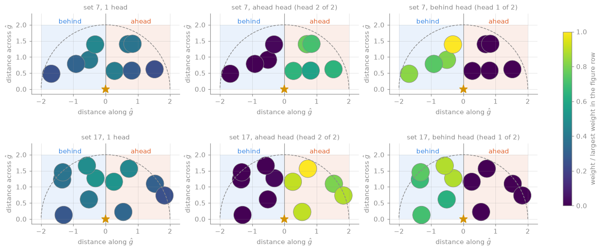
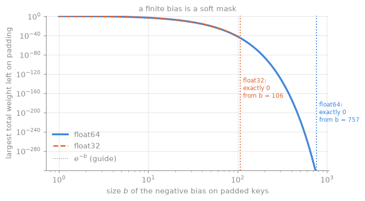
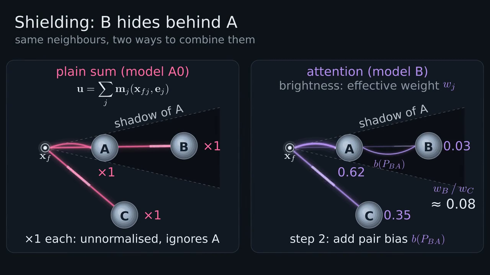

Multiple heads and masking#
What you will learn
How multi-head attention works. The width is split into \(H\) heads, each head attends on its own, and the results are concatenated. You will check that this is exactly \(H\) independent single-head attentions, at the same parameter count as one head.
Why several heads can do what one head cannot. One softmax row is one probability distribution, so one head cannot look in two places at once. On a toy task you will watch two heads split the neighbourhood between them.
How a padding mask lets neighbour sets of different sizes share one batch. You will prove that padded tokens get weight exactly zero, that the output does not depend on the padded values (or their gradients), and that it matches the unpadded computation.
How an additive float mask generalises the boolean mask, which is where model B puts its geometry, and why the causal mask of language models has no place in a model of particles.
Prerequisites: Lesson 05b (queries, keys, values and one head of scaled dot-product attention). Lesson 05a explains why we want attention between neighbours at all. The transformer chapter of the original paper [Vaswani et al., 2017] is a good companion read.
import copy, math, os, time
import numpy as np
import matplotlib.pyplot as plt
from matplotlib.patches import Circle, Rectangle
import torch
import torch.nn.functional as F
from course_utils import metrics as mt, plotting as cplt
from course_utils.attention import (attention, softmax, split_heads, merge_heads, causal_mask, padding_mask,
MultiHeadSelfAttention)
from course_utils.equivariance import check_permutation, report
from course_utils.models import param_count
torch.set_num_threads(min(4, os.cpu_count() or 1)) # small models: a few threads are enough
T0 = time.time()
TOL = 1e-12
1. One head is one weighted average#
In Lesson 05b, every token \(j\) (here: the query point or one of its neighbours) produced a query \(\mathbf Q_j = W_Q\mathbf h_j\), a key \(\mathbf K_j = W_K\mathbf h_j\) and a value \(\mathbf V_j = W_V\mathbf h_j\), and attention replaced token \(j\) by
As in the rest of Part V, \(j\) is the token that looks and \(k\) the token it looks at: \(s_{jk}\) is a score and \(w_{jk}\) an attention weight.
Read the weights row by row. For a fixed token \(j\), the numbers \(w_{j1},\dots,w_{jL}\) are positive and add up to one. They form one probability distribution over the tokens, and \(\mathbf a_j\) is the average of the values under that distribution. The value vector has many channels, so one head can carry many numbers at once. But all of them are averaged with the same weights and divided by the same total. Suppose the next layer needs “the mean of \(v\) over group A” and “the mean of \(v\) over group B”, where the two groups have different and varying sizes. One distribution can be sharp on group A, or on group B, or broad over both; it cannot normalise by the size of group A in some channels and by the size of group B in others. Each head’s softmax does exactly one such normalisation, for free. Two heads do two.
2. Multi-head attention: split, attend, concatenate#
The fix is to run several distributions side by side. Take tokens \(\mathbf h_j \in \mathbb R^{D}\), where \(D\) is
the model width. In code, a set of \(L\) tokens is stored as a matrix with one token per row,
\(\mathbf h \in \mathbb R^{L\times D}\), so the projection \(\mathbf Q_j = W_Q\mathbf h_j\) of Lesson 05b becomes
h @ Wq with Wq \(= W_Q^\top\) (same numbers, rows instead of columns). Multi-head attention with \(H\) heads does
four things:
Project as usual: \(\mathbf Q = \mathbf h W_Q^\top\), \(\mathbf K = \mathbf h W_K^\top\), \(\mathbf V = \mathbf h W_V^\top\), each \(L\times D\).
Split the \(D\) columns into \(H\) blocks of \(d_h = D/H\) columns. Block \(h\) gives \(\mathbf Q^{(h)}, \mathbf K^{(h)}, \mathbf V^{(h)} \in \mathbb R^{L\times d_h}\). The head dimension \(d_h\) plays the role of \(d\) in Lesson 05b, including in the scale \(1/\sqrt{d_h}\).
Attend in every head on its own, with its own softmax: \(\mathbf A^{(h)} = \operatorname{softmax}\big(\mathbf Q^{(h)}\mathbf K^{(h)\top}/\sqrt{d_h}\big)\,\mathbf V^{(h)}\).
Concatenate the heads back to width \(D\) and mix them with one more matrix: \(\operatorname{MHA}(\mathbf h) = \big[\mathbf A^{(1)}\,|\,\cdots\,|\,\mathbf A^{(H)}\big]\,W_O^\top\).
The smallest case, \(H = 2\) and \(d_h = 1\). With one column per head, every query, key and value is a single number and every score is a single product, so the four steps can be drawn. For one token that looks at tokens \(k\) with values \(v_k\), head \(h\) has its own scores \(s^{(h)}_k\) and takes its own weighted average of the same values:
Two heads with different scores give two different summaries of one neighbourhood, and \(W_O\) decides how they are combined. A single softmax row can only produce one.
Animation T3, multi-head attention and masks. One query point with its 12 nearest neighbours as tokens \(k\). One attention row is one weighted average, drawn as edges whose brightness is the weight. The neighbourhood is then duplicated for two heads that are set by hand, not trained, and the clip says so: head 1 scores by nearness, \(s^{(1)}_k = -r_k/\ell\), and head 2 by direction, \(s^{(2)}_k = \kappa\,c_k\), highest for neighbours straight ahead along the settling direction. Each head takes its own softmax and its own average of the same values \(v_k = \lvert\mathbf q_k\rvert\), which gives two different numbers. They are laid side by side and mixed by an output matrix, here into their mean and their difference: \(\operatorname{MHA} = [A^{(1)}\,|\,A^{(2)}]\,W_O^\top\). The last part masks the tokens beyond a cutoff distance \(r_c\): their score becomes \(-\infty\), their weight is exactly zero, and the remaining weights still sum to one; the same mask is applied to both heads. Notice that each head renormalises on its own after the mask. Section 5.2 proves that the zero is exact, and Section 4 shows heads that were trained. Each neighbour is drawn at its true distance and its true angle to the settling direction. The direction score uses the lab settling direction, as this lesson’s task does, so head 2 is not rotation-invariant; Lesson 05f builds the invariant version. The clip is drawn on a dark stage in both page themes and has a voice-over with captions.
Nothing new is learned per head. \(W_Q\), \(W_K\), \(W_V\) and \(W_O\) are the same four \(D\times D\) matrices that a
single head of width \(D\) uses. The only change is that the scores are computed blockwise, so there are \(H\)
softmax rows per token instead of one. In code, the split is a reshape and the concatenation is its inverse.
def mha_inline(h, Wq, Wk, Wv, Wo, H, mask=None):
"""Multi-head self-attention written with reshapes. h (B, L, D) -> (B, L, D); Wq etc. are D x D (= W_Q^T)."""
B, L, W = h.shape
d = W // H
split = lambda t: t.reshape(B, L, H, d).transpose(1, 2) # (B, H, L, d_h)
q, k, v = split(h @ Wq), split(h @ Wk), split(h @ Wv)
logits = q @ k.transpose(-2, -1) / math.sqrt(d) # (B, H, L, L): one score matrix per head
if mask is not None:
logits = logits.masked_fill(~mask, float("-inf"))
w = torch.softmax(logits, dim=-1)
a = w @ v # (B, H, L, d_h)
return a.transpose(1, 2).reshape(B, L, W) @ Wo, w # concatenate, then mix
def mha_loop(h, Wq, Wk, Wv, Wo, H):
"""The same thing as H separate single-head attentions on column blocks, concatenated."""
W = h.shape[-1]
d = W // H
outs = []
for i in range(H):
cols = slice(i * d, (i + 1) * d)
outs.append(attention(h @ Wq[:, cols], h @ Wk[:, cols], h @ Wv[:, cols]))
return torch.cat(outs, dim=-1) @ Wo
g = torch.Generator().manual_seed(0)
B_, L_, W_, H_ = 3, 7, 8, 2
h = torch.randn(B_, L_, W_, generator=g, dtype=torch.float64)
Wq, Wk, Wv, Wo = (torch.randn(W_, W_, generator=g, dtype=torch.float64) / math.sqrt(W_) for _ in range(4))
out_inline, w_inline = mha_inline(h, Wq, Wk, Wv, Wo, H_)
out_loop = mha_loop(h, Wq, Wk, Wv, Wo, H_)
print(report("reshape version vs loop over heads", float((out_inline - out_loop).abs().max()), TOL))
PASS reshape version vs loop over heads: max error 6.7e-16 (tol 1e-12)
The reshapes must agree with the course helpers split_heads and merge_heads, and merging must undo
splitting exactly. Both are pure index shuffles, so the comparison is exact, with no round-off at all:
q_ours = (h @ Wq).reshape(B_, L_, H_, W_ // H_).transpose(1, 2)
print("split_heads matches our reshape exactly:", torch.equal(split_heads(h @ Wq, H_), q_ours))
print("merge_heads(split_heads(x)) == x exactly:", torch.equal(merge_heads(split_heads(h, H_)), h))
split_heads matches our reshape exactly: True
merge_heads(split_heads(x)) == x exactly: True
The course’s MultiHeadSelfAttention and PyTorch’s nn.MultiheadAttention store the same four matrices in
their own layouts (one fused \(D\times 3D\) input projection, plus biases we set to zero here). Copy ours in and all
three must agree to round-off:
cu_mha = MultiHeadSelfAttention(W_, H_).double()
th_mha = torch.nn.MultiheadAttention(W_, H_, bias=False, batch_first=True).double()
with torch.no_grad():
cu_mha.qkv.weight.copy_(torch.cat([Wq, Wk, Wv], dim=1).T) # nn.Linear computes x @ weight.T
cu_mha.qkv.bias.zero_()
cu_mha.out.weight.copy_(Wo.T)
cu_mha.out.bias.zero_()
th_mha.in_proj_weight.copy_(torch.cat([Wq, Wk, Wv], dim=1).T)
th_mha.out_proj.weight.copy_(Wo.T)
out_cu = cu_mha(h)
out_th, _ = th_mha(h, h, h, need_weights=False)
print(report("ours vs course_utils MultiHeadSelfAttention", float((out_inline - out_cu).abs().max()), TOL))
print(report("ours vs torch.nn.MultiheadAttention", float((out_inline - out_th).abs().max()), TOL))
PASS ours vs course_utils MultiHeadSelfAttention: max error 3.3e-16 (tol 1e-12)
PASS ours vs torch.nn.MultiheadAttention: max error 6.7e-16 (tol 1e-12)
The parameter count does not depend on \(H\):
for H in (1, 2, 4, 8):
print(f"width 16, {H} head(s): {param_count(MultiHeadSelfAttention(16, H)):,} parameters")
width 16, 1 head(s): 1,088 parameters
width 16, 2 head(s): 1,088 parameters
width 16, 4 head(s): 1,088 parameters
width 16, 8 head(s): 1,088 parameters
Here is the split drawn out for one set of tokens. The \(D = 8\) columns of \(\mathbf Q\) are cut into two blocks, each block gets its own score matrix and its own softmax (middle), and the head outputs are laid side by side again (right) before \(W_O\) mixes them.

Different heads produce different attention patterns from the same tokens, because each head sees a different slice of the projected features. Training decides what each slice should encode. The next section gives the heads a reason to differ.
Multi-head attention still treats the tokens as a set: relabelling the inputs relabels the outputs in the same way (Lesson 05d explains why). A quick check:
check_permutation(lambda x: mha_inline(x, Wq, Wk, Wv, Wo, H_)[0], (h,), axis=1, mode="equivariant",
name="multi-head self-attention");
PASS multi-head self-attention: max error 2.0e-16 (tol 1e-12) [3 random permutations of axis 1 (equivariant)]
3. A task that one head cannot do#
We build a toy task in which the neighbourhood of a query point naturally splits in two. The suspensions come
from course_utils.toy_data. The particles settle along a fixed lab direction \(\hat{\mathbf g}\) (the toy’s
settling direction). For a query point \(\mathbf x_f\) we keep every particle whose centre lies within a
cutoff radius \(r_c\). With \(\mathbf r_j\) the centre of neighbour \(j\) and \(\mathbf x_{fj} = \mathbf x_f -
\mathbf r_j\) the offset from that centre to the query point (as everywhere in the course), we describe neighbour
\(j\) by three numbers:
\(c_j = -\hat{\mathbf g}\cdot\mathbf x_{fj}/|\mathbf x_{fj}|\), the cosine of the angle between the settling direction and the direction from the point to the neighbour. \(c_j > 0\) means the neighbour is ahead of the point (further along the direction of settling), \(c_j < 0\) means behind;
its distance \(r_j = |\mathbf x_{fj}|\);
a value \(v_j = |\mathbf q_j|\), the magnitude of the particle’s state (its slip speed).
The target has two components: the mean of \(v_j\) over the neighbours ahead, and the mean over the neighbours behind,
This is a made-up target, not physics. It isolates the one thing we want to see: an output that needs two different averages, each normalised by its own, varying group size, over the same set. Two remarks before the code.
The counts vary. With a cutoff, one query point has only a couple of neighbours and the next has a dozen. A batch must be a rectangular tensor, so we pad every set to the same length
N_MAXand record which slots are real. Section 5 is about doing that correctly. For now, take the mask as given.This task is not rotation-invariant, on purpose: \(c_j\) refers to a fixed lab axis. Lesson 05f builds attention whose inputs are all rotation invariants.
R_CUT, N_MAX = 2.0, 16
t = time.time()
snaps = cu.make_snapshots(5)
print(f"generated 5 snapshots in {time.time() - t:.1f} s; {snaps[0].n} spheres each")
g_hat = torch.tensor(snaps[0].config.settling_direction, dtype=torch.float64)
def neighbour_sets(snap, n_points, seed):
"""Variable-size neighbour sets (within R_CUT), padded to N_MAX, nearest first."""
pts = snap.sample_exterior(n_points, rng=np.random.default_rng(seed))
inp = cu.neighbour_inputs(pts, snap.positions, snap.slip, snap.phi_local, snap.density_ratio, N_MAX)
x = inp["x_fj"] # x_f - r_j, (P, N_MAX, 3), nearest first
r = x.norm(dim=-1)
c = (-x / r[..., None]) @ g_hat # cos(angle between g and r_j - x_f)
v = inp["scalars"][..., 0] # |q_j|
real = r < R_CUT # (P, N_MAX) True for real neighbours
ahead, behind = real & (c > 0), real & (c < 0)
keep = (ahead.sum(1) > 0) & (behind.sum(1) > 0) # both averages must exist
y = torch.stack([(v * ahead).sum(1) / ahead.sum(1).clamp_min(1),
(v * behind).sum(1) / behind.sum(1).clamp_min(1)], -1)
return dict(c=c[keep], r=r[keep], v=v[keep], real=real[keep], y=y[keep], x_fj=x[keep])
def stack(sets):
return {k: torch.cat([s[k] for s in sets]) for k in sets[0]}
train_raw = stack([neighbour_sets(s, 800, seed=i) for i, s in enumerate(snaps[:4])])
test_raw = stack([neighbour_sets(snaps[4], 800, seed=4)])
counts = train_raw["real"].sum(1)
print(f"train sets {len(counts)}, test sets {len(test_raw['real'])}; "
f"neighbours per set: min {counts.min().item()}, mean {counts.float().mean():.1f}, max {counts.max().item()}")
assert counts.max() < N_MAX, "every set must fit, with room to spare, so that no neighbour is cut off"
generated 5 snapshots in 1.1 s; 96 spheres each
train sets 3156, test sets 793; neighbours per set: min 2, mean 7.3, max 14
The real neighbours are always the first slots, because neighbour_inputs sorts them nearest first. So the real
part of each row is a prefix, and the course helper padding_mask(lengths, n) builds the same mask from the
counts alone:
same = torch.equal(padding_mask(counts, N_MAX)[:, 0, 0], train_raw["real"])
print("padding_mask(lengths) reproduces the cutoff mask:", same)
padding_mask(lengths) reproduces the cutoff mask: True
The features enter the network standardised (zero mean, unit spread over the real training tokens). Padded slots are filled with zeros, an arbitrary choice that Section 5 will show does not matter.
real_tr = train_raw["real"]
STATS = {k: (train_raw[k][real_tr].mean(), train_raw[k][real_tr].std()) for k in ("r", "v")}
def features(raw):
"""(P, N_MAX, 3) = [c, (r - mean)/std, (v - mean)/std], zeros in padded slots."""
f = torch.stack([raw["c"]] + [(raw[k] - STATS[k][0]) / STATS[k][1] for k in ("r", "v")], -1)
return torch.where(raw["real"][..., None], f, torch.zeros_like(f))
train_f, test_f = features(train_raw), features(test_raw)
print("feature tensor:", tuple(train_f.shape), "| mask:", tuple(train_raw["real"].shape))
feature tensor: (3156, 16, 3) | mask: (3156, 16)

The left panels fold each neighbourhood into a half-plane around the query point (star): the horizontal axis is the distance along the settling direction, the vertical axis the distance across it. Every neighbour on the right half counts toward \(y_{\text{ahead}}\), every neighbour on the left toward \(y_{\text{behind}}\). The fold throws away the azimuth (the angle around \(\hat{\mathbf g}\)), so two particles on opposite sides of the axis can land on top of each other in the picture. The spheres do not overlap in 3D; only their shadows on this half-plane do. The fold keeps exactly the two geometric inputs, \(r_j\) and \(c_j\).
3.1 The model#
The network is deliberately minimal, so that the attention weights are the whole story:
One extra query token stands for the query point itself. It has features \((0, 0, 0)\) and a flag \(1\); the neighbours have their three features and a flag \(0\).
A small MLP embeds every token to width \(D = 16\).
One multi-head self-attention layer (the course’s
MultiHeadSelfAttention) with the padding mask.A linear readout of the query token’s output gives \((\hat y_{\text{ahead}}, \hat y_{\text{behind}})\).
The query token’s attention row is then literally “how the query point looks at its neighbours”, one row per head. There is no feed-forward layer after attention and the readout is linear, so the network cannot divide one number by another after attention. A single head can still put indicator-weighted sums such as \(\sum_{j:\,c_j>0} v_j\) and the group sizes into different channels of its value vector, but all of them arrive divided by the same total, and turning them into two group means needs a division the linear readout cannot do. Each head’s softmax performs that division itself. This is a deliberate choice that makes the role of the heads easy to see; Exercise 5 adds a nonlinear readout and measures how much of the gap it closes.
class QueryTokenNet(torch.nn.Module):
"""[query token, neighbour tokens] -> MLP embedding -> one masked MHSA layer -> readout at the query token."""
def __init__(self, width=16, heads=2, hidden=32):
super().__init__()
self.embed = torch.nn.Sequential(torch.nn.Linear(4, hidden), torch.nn.GELU(), torch.nn.Linear(hidden, width))
self.attn = MultiHeadSelfAttention(width, heads)
self.read = torch.nn.Linear(width, 2)
@staticmethod
def tokens(feats):
B, N, _ = feats.shape
query = torch.zeros(B, 1, 4, dtype=feats.dtype)
query[..., 3] = 1.0 # the flag
return torch.cat([query, torch.cat([feats, torch.zeros(B, N, 1, dtype=feats.dtype)], -1)], 1)
def forward(self, feats, real, use_mask=True):
B = feats.shape[0]
keep = torch.cat([torch.ones(B, 1, dtype=torch.bool), real], 1) # the query token is always real
mask = keep[:, None, None, :] if use_mask else None # (B, 1, 1, 1 + N): same for every head and row
return self.read(self.attn(self.embed(self.tokens(feats)), mask=mask)[:, 0])
def query_weights(self):
"""Attention of the query token over the neighbour slots, (B, H, N), from the last forward."""
return self.attn.last_weights[:, :, 0, 1:]
Training is plain Adam on the mean squared error of the standardised targets, in float32:
Y_MEAN, Y_STD = train_raw["y"].mean(0), train_raw["y"].std(0)
def fit(heads, seed=0, epochs=60, lr=5e-3, batch=128, width=16, use_mask=True, net_cls=QueryTokenNet):
torch.manual_seed(seed)
net = net_cls(width, heads)
opt = torch.optim.Adam(net.parameters(), lr=lr)
f, real = train_f.float(), train_raw["real"]
y = ((train_raw["y"] - Y_MEAN) / Y_STD).float()
gen = torch.Generator().manual_seed(seed)
losses = []
for _ in range(epochs):
perm, tot = torch.randperm(len(f), generator=gen), 0.0
for i in range(0, len(f), batch):
b = perm[i:i + batch]
loss = ((net(f[b], real[b], use_mask=use_mask) - y[b]) ** 2).mean()
opt.zero_grad(), loss.backward(), opt.step()
tot += loss.item() * len(b)
losses.append(tot / len(f))
return net, losses
def evaluate(net, feats=None, real=None, use_mask=True):
feats = test_f if feats is None else feats
real = test_raw["real"] if real is None else real
with torch.no_grad():
p = net(feats.float(), real, use_mask=use_mask).double() * Y_STD + Y_MEAN
return [mt.r2(p[:, i:i + 1], test_raw["y"][:, i:i + 1]) for i in range(2)]
nets, hist, scores = {}, {}, {}
for H in (1, 2):
t = time.time()
nets[H], hist[H] = fit(H)
scores[H] = evaluate(nets[H])
print(f"H = {H}: {param_count(nets[H]):,} parameters, test R2 ahead {scores[H][0]:.3f}, "
f"behind {scores[H][1]:.3f} ({time.time() - t:.0f} s)")
H = 1: 1,810 parameters, test R2 ahead 0.843, behind 0.828 (2 s)
H = 2: 1,810 parameters, test R2 ahead 0.969, behind 0.966 (2 s)

The two networks have exactly the same parameters and the same training. The only difference is whether the query token’s 16 channels are scored with one softmax or with two. The single head ends up clearly worse on both outputs. The loss curves tell the same story in time. Both models first drop onto the same plateau, the best that one broad average with a linear readout can do. The two-head model then leaves it, and the next section shows why: that is when its heads split the neighbourhood between them.
4. What the heads learned#
Look at the query token’s attention row in each head. For every test neighbour, plot its weight against its angle \(c_j\). To compare sets of different sizes, we multiply each weight by the set size \(n\): a value of 1 means “exactly the uniform share \(1/n\)”, 0 means “ignored”.
The head index that ends up looking ahead depends on the random initialisation, so we name the heads from what they do: the head with the larger share of weight ahead is called the ahead head.
def head_shares(net, raw=None, feats=None):
"""Mean weight each head gives to the neighbours ahead and behind (query token row). Defaults: the current test set."""
raw = test_raw if raw is None else raw
feats = test_f if feats is None else feats
with torch.no_grad():
net(feats.float(), raw["real"])
w = net.query_weights().double() # (P, H, N)
ahead = (raw["real"] & (raw["c"] > 0))[:, None]
behind = (raw["real"] & (raw["c"] < 0))[:, None]
return w, (w * ahead).sum(-1).mean(0), (w * behind).sum(-1).mean(0)
w1, a1, b1 = head_shares(nets[1])
w2, a2, b2 = head_shares(nets[2])
order = [int(a2.argmax()), int(a2.argmin())] # [ahead head, behind head]
names = {order[0]: "ahead head", order[1]: "behind head"}
print(f"1 head : weight on neighbours ahead {a1[0]:.2f}, behind {b1[0]:.2f}")
for i in order:
print(f"2 heads, head {i + 1} ({names[i]}): weight ahead {a2[i]:.2f}, behind {b2[i]:.2f}")
assert order[0] != order[1]
# the prose below describes a successful split; stop the build if training did not produce one
assert a2[order[0]] > 0.8 and a2[order[1]] < 0.2 and min(scores[2]) > max(scores[1])
1 head : weight on neighbours ahead 0.46, behind 0.47
2 heads, head 2 (ahead head): weight ahead 0.95, behind 0.05
2 heads, head 1 (behind head): weight ahead 0.04, behind 0.96

The picture is a step function in each of the two heads. One head gives the neighbours ahead most of its weight and almost nothing to those behind; the other head does the reverse. The single head (left) compromises with a broad distribution. For a specialised head the right reference is not the dotted line (“uniform over all \(n\)”) but the dashed one: uniform over its own half, \(n/n_{\text{half}}\), about 2. How close to that do the heads come? Multiply each weight by the size of the half it falls in, \(n_{\text{half}}\), so that 1 means “exactly the share a mean over that half would give”:
c_rt = test_raw["c"][real_t].numpy()
for k, (rel, side) in enumerate(((rel2[0], c_rt > 0), (rel2[1], c_rt < 0))):
x = (rel / n_t.expand_as(test_raw["c"])[real_t].numpy() * n_half)[side] # n_half x weight, own half
p10, p50, p90 = np.percentile(x, [10, 50, 90])
print(f"{('ahead', 'behind')[k]} head, neighbours in its own half: n_half x weight median {p50:.2f}, "
f"10-90% range {p10:.2f} to {p90:.2f}")
ahead head, neighbours in its own half: n_half x weight median 0.96, 10-90% range 0.76 to 1.17
behind head, neighbours in its own half: n_half x weight median 0.97, 10-90% range 0.81 to 1.14
So the specialised heads are close to, not exactly, uniform within their half: the middle 80% of neighbours get between about 0.75 and 1.2 times the share a mean over the half would give. The bump near \(|c_j|\approx 0.3\) in the scatter plot is where the head is most confident that a neighbour is on its side. The leftover non-uniformity is part of why two heads still do not reach \(R^2 = 1\).
4.1 Why the heads split: a ramp of scores, then a softmax#
The weights are the end of the story. The beginning is the score \(s^{(h)}_{0j} = \mathbf Q^{(h)}_0\cdot \mathbf K^{(h)}_j/\sqrt{d_h}\) of the query token (index 0) for neighbour \(j\), in head \(h\). The softmax ignores a constant added to all the scores of one row, so we plot each score minus the mean score of its set, against \(c_j\). Below it, the same neighbours after the softmax:

Each head has learned a score that is roughly flat on its own side and falls off steeply, almost linearly in \(c_j\), on the other side; the two heads are mirror images. The drop is ten or more units, and the softmax exponentiates it: a neighbour scored 10 below the others gets \(e^{-10}\approx 5\times10^{-5}\) times their weight. So a smooth ramp in score space becomes a sharp step in weight space. In the language of Lesson 05b: in the ahead head, the keys of neighbours behind cast short (strongly negative) shadows on the query token’s query direction, and in the behind head it is the keys of neighbours ahead. Nothing in the architecture had to be told where the step is; gradient descent put it at \(c_j \approx 0\) because that is where the target changes group.
The same thing, drawn on two neighbourhoods. Each particle is coloured by the weight the query point (star) gives it, separately per head:

Two lessons from this small experiment carry over to real transformers.
Heads are a resource, not a guarantee. Nothing in the architecture said “head 1, look ahead”. The split emerged from training because the task rewards two differently normalised averages. With more heads than the task needs, some heads duplicate each other or stay broad (Exercise 1), and whether the split is found at all is an outcome of training, not a guarantee (Exercise 2).
More heads cost nothing in parameters, but they shrink each head’s dimension \(d_h = D/H\). Every head’s scores \(\mathbf Q^{(h)}\cdot\mathbf K^{(h)}\) are built from only \(d_h\) numbers, so very many heads of tiny dimension can each express only simple patterns.
5. Padding masks: sets of different sizes in one batch#
5.1 What goes wrong without the mask#
The batch tensor has N_MAX slots per set, and most slots in most sets are padding. Without a mask, a padded
slot is just another token: its zero features are embedded (to something that is not zero, because of the
biases), it gets a key and a value, and it receives attention weight like any real neighbour. There are two ways
to get this wrong, and we try both on the two-head model:
Train without the mask from the start. This is the fair comparison: the network sees padding during training and can learn to live with it.
Train with the mask, then forget it at inference. This mismatch is a common bug (for example a
mask=Nonedefault in an evaluation script), and it is far more damaging.
t = time.time()
net_nm, _ = fit(2, use_mask=False) # trained with padding visible
r2_mask = evaluate(nets[2])
r2_nm = evaluate(net_nm, use_mask=False)
r2_forgot = evaluate(nets[2], use_mask=False)
with torch.no_grad():
net_nm(test_f.float(), real_t, use_mask=False)
leak = (net_nm.query_weights() * (~real_t)[:, None]).sum(-1) # weight on padded slots, (P, H)
print(f"trained and tested with mask : test R2 ahead {r2_mask[0]:.3f}, behind {r2_mask[1]:.3f}")
print(f"trained and tested without mask : test R2 ahead {r2_nm[0]:.3f}, behind {r2_nm[1]:.3f} "
f"({time.time() - t:.0f} s to train)")
print(f"trained with mask, tested without it: test R2 ahead {r2_forgot[0]:.3f}, behind {r2_forgot[1]:.3f}")
print(f"unmasked network: the query token puts on average {leak.mean():.2f} of its weight on padding "
f"(largest {leak.max():.2f})")
assert max(r2_nm) < min(r2_mask) and max(r2_forgot) < min(r2_mask)
trained and tested with mask : test R2 ahead 0.969, behind 0.966
trained and tested without mask : test R2 ahead 0.858, behind 0.860 (2 s to train)
trained with mask, tested without it: test R2 ahead 0.624, behind 0.604
unmasked network: the query token puts on average 0.33 of its weight on padding (largest 0.86)
The network trained without a mask is clearly worse than the masked one, though not catastrophically: with zeros in every padded slot, the padding is a consistent signal, and the number of padded slots even tells the network how many real neighbours there are. Forgetting the mask on a network that never saw padding is much worse.
The deeper problem with the unmasked network is that its predictions depend on what we chose to write into the padded slots, a choice that has nothing to do with the physics. The same network, the same real neighbours, three different fill values:
def fill_padding(feats, real, value):
return torch.where(real[..., None], feats, torch.full_like(feats, value))
with torch.no_grad():
for fill in (0.0, 1.0, -3.0):
p = net_nm(fill_padding(test_f, real_t, fill).float(), real_t, use_mask=False)
r2_fill = [mt.r2(p.double()[:, i:i + 1] * Y_STD[i] + Y_MEAN[i], test_raw["y"][:, i:i + 1]) for i in range(2)]
print(f"unmasked net, padded slots filled with {fill:+.0f}: first prediction "
f"{(p[0].double() * Y_STD + Y_MEAN).numpy().round(4)}, test R2 {np.round(r2_fill, 3)}")
unmasked net, padded slots filled with +0: first prediction [0.8244 0.6733], test R2 [0.858 0.86 ]
unmasked net, padded slots filled with +1: first prediction [1.0834 0.6696], test R2 [-1.105 0.269]
unmasked net, padded slots filled with -3: first prediction [1.0447 0.1296], test R2 [ 0.748 -9.181]
A model whose answer changes when you edit slots that hold no particle is not a model of the particles. The mask removes this dependence exactly, as the next section proves.
5.2 The mask, and why it is exact#
A boolean mask \(m_{jk}\in\{\text{True},\text{False}\}\) (True = “may attend”) is applied to the logits before the softmax:
Since \(e^{-\infty} = 0\) exactly in floating point, a masked key contributes exactly zero to the numerator and
to the denominator. The real keys renormalise among themselves, as if the padded slots had never existed. Then
\(\mathbf a_j = \sum_k w_{jk}\mathbf V_k\) contains the padded values only as \(0\cdot\mathbf V_k\), which is exactly
zero for any finite \(\mathbf V_k\). These are not approximations, so we can check them with ==, not with a
tolerance.
Animation T3 in Section 2 shows this on two heads: the masked tokens drop to weight zero and each head renormalises over the tokens that remain.
For a padding mask, \(m_{jk}\) depends only on the key \(k\): every row and every head uses the same mask. That is why
QueryTokenNet passes a mask of shape (B, 1, 1, 1 + N), which broadcasts over heads and rows.
Claim 1: padded slots get weight exactly zero.
net64 = copy.deepcopy(nets[2]).double().eval()
f64, real64 = test_f.clone(), test_raw["real"]
with torch.no_grad():
out_ref = net64(f64, real64)
W_all = net64.attn.last_weights # (P, H, 1 + N, 1 + N), every row
keep = torch.cat([torch.ones(len(real64), 1, dtype=torch.bool), real64], 1)
pad_w = W_all.masked_select(~keep[:, None, None, :].expand_as(W_all))
print(f"{pad_w.numel():,} weights on padded keys (all heads, all rows); "
f"number that are not exactly 0.0: {int((pad_w != 0).sum())}")
row_sums = W_all.sum(-1)
print(report("rows still sum to one over the real keys", float((row_sums - 1).abs().max()), TOL))
assert int((pad_w != 0).sum()) == 0
229,228 weights on padded keys (all heads, all rows); number that are not exactly 0.0: 0
PASS rows still sum to one over the real keys: max error 4.4e-16 (tol 1e-12)
Claim 2: the output does not depend on the padded values, not even in the last bit. We overwrite every padded slot with large random numbers and compare the outputs for exact equality:
gpad = torch.Generator().manual_seed(1)
garbage = 1e3 * torch.randn(f64.shape, generator=gpad, dtype=torch.float64)
f_garbage = torch.where(real64[..., None], f64, garbage)
with torch.no_grad():
out_garbage = net64(f_garbage, real64)
diff = float((out_garbage - out_ref).abs().max())
print(f"padded features changed by up to {garbage.abs().max():.0f}; largest output change: {diff}")
assert diff == 0.0
padded features changed by up to 4552; largest output change: 0.0
Claim 3: the gradient with respect to the padded inputs is exactly zero, so the padding cannot leak into training either:
f_req = f_garbage.clone().requires_grad_(True)
net64(f_req, real64).sum().backward()
g_pad = float(f_req.grad[~real64].abs().max())
g_real = float(f_req.grad[real64].abs().max())
print(f"largest |d output / d input|: padded slots {g_pad}, real slots {g_real:.2e}")
assert g_pad == 0.0 and g_real > 0
largest |d output / d input|: padded slots 0.0, real slots 8.65e+00
Claim 4: padding plus mask equals no padding at all. Each set, cut to its real neighbours and run on its own with no mask, must give the same prediction as its row in the padded batch. Here the shapes differ, so the library may add up the same numbers in a different order, and we compare to round-off:
worst = 0.0
with torch.no_grad():
for i in range(200):
n = int(real64[i].sum())
alone = net64(f64[i:i + 1, :n], torch.ones(1, n, dtype=torch.bool), use_mask=False)
worst = max(worst, float((alone - out_ref[i]).abs().max()))
print(report("padded + mask vs each set alone (200 sets)", worst, TOL))
PASS padded + mask vs each set alone (200 sets): max error 1.4e-15 (tol 1e-12)
Claim 5: where the padding sits does not matter. Shuffling the slots of every set, real and padded together, with the mask shuffled the same way, must leave the output unchanged. This is the permutation invariance of Lesson 05d, now with padding:
check_permutation(lambda f, m: net64(f, m), (f64[:64], real64[:64]), axis=1, mode="invariant",
name="masked net, slots shuffled with their mask");
PASS masked net, slots shuffled with their mask: max error 4.2e-16 (tol 1e-12) [3 random permutations of axis 1 (invariant)]
Our hand-written attention must agree with PyTorch’s F.scaled_dot_product_attention, which uses the same
convention (True = may attend) for a boolean attn_mask. In float64 on the CPU it runs its plain math path, not a
fused GPU kernel (Lesson 05b, Section 7):
with torch.no_grad():
tok = net64.embed(net64.tokens(f64[:64]))
q, k, v = (split_heads(t, 2) for t in net64.attn.qkv(tok).chunk(3, dim=-1))
m = keep[:64, None, None, :]
ours = attention(q, k, v, mask=m)
fused = F.scaled_dot_product_attention(q, k, v, attn_mask=m)
print(report("course attention vs F.scaled_dot_product_attention, bool mask", float((ours - fused).abs().max()), TOL))
PASS course attention vs F.scaled_dot_product_attention, bool mask: max error 1.3e-15 (tol 1e-12)
Watch the convention
torch.nn.MultiheadAttention takes its padding mask as key_padding_mask, where True means “ignore this
key”, the opposite of attn_mask in scaled_dot_product_attention and of the course’s helpers. Passing the
mask of real tokens there silently masks the real tokens and keeps the padding.
lengths = torch.tensor([3, 7, 5])
real_mask = padding_mask(lengths, L_) # (B, 1, 1, L), True = real
with torch.no_grad():
ref, _ = mha_inline(h, Wq, Wk, Wv, Wo, H_, mask=real_mask)
right, _ = th_mha(h, h, h, key_padding_mask=~real_mask[:, 0, 0], need_weights=False)
wrong, _ = th_mha(h, h, h, key_padding_mask=real_mask[:, 0, 0], need_weights=False)
print(report("nn.MultiheadAttention with key_padding_mask = ~real", float((right - ref).abs().max()), TOL))
print(f"nn.MultiheadAttention with key_padding_mask = real: max error {(wrong - ref).abs().max():.2f} (wrong!)")
PASS nn.MultiheadAttention with key_padding_mask = ~real: max error 6.7e-16 (tol 1e-12)
nn.MultiheadAttention with key_padding_mask = real: max error 3.66 (wrong!)
5.3 Two ways to break an exact mask#
The proofs above have two small print conditions. Both have caught real code.
The padded values must be finite. The masked weight is exactly \(0\), but \(0\cdot\text{NaN} = \text{NaN}\) and \(0\cdot\infty = \text{NaN}\). A NaN left in a padded slot (for example from normalising an empty slot by its zero length) spreads to every output:
f_nan = torch.where(real64[..., None], f64, torch.full_like(f64, float("nan")))
with torch.no_grad():
out_nan = net64(f_nan, real64)
out_clean = net64(torch.where(real64[..., None], f_nan, torch.zeros_like(f_nan)), real64)
print("NaN in padded slots -> outputs that are NaN:", int(out_nan.isnan().any(-1).sum()), "of", len(out_nan))
print("same, zeroed before use -> outputs that are NaN:", int(out_clean.isnan().any(-1).sum()),
"| equal to the reference:", torch.equal(out_clean, out_ref))
NaN in padded slots -> outputs that are NaN: 793 of 793
same, zeroed before use -> outputs that are NaN: 0 | equal to the reference: True
The fix is the line we already had in features: overwrite padded slots with a finite value (zero) before they
enter the network.
No row may be fully masked. If every key in a row is masked, the softmax computes \(-\infty - (-\infty)\), which is NaN. With a cutoff radius, a query point with no neighbour inside \(r_c\) produces exactly such a row. Our network never hits this, because the query token is always real, so every row has at least one key:
qe = torch.randn(1, 1, 4, 8, dtype=torch.float64)
print("attention over a row with every key masked:",
attention(qe, qe, qe, mask=torch.zeros(1, 1, 1, 4, dtype=torch.bool))[0, 0, 0, :3])
empty = torch.zeros(1, N_MAX, dtype=torch.bool) # a query point with no neighbours
with torch.no_grad():
print("QueryTokenNet on a set with zero neighbours:", net64(torch.zeros(1, N_MAX, 3, dtype=torch.float64), empty))
attention over a row with every key masked: tensor([nan, nan, nan], dtype=torch.float64)
QueryTokenNet on a set with zero neighbours: tensor([[0.8186, 0.8530]], dtype=torch.float64)
One more consequence of the mask: the rows of the padded tokens (padded slots acting as queries) are still computed, and their outputs are meaningless. That is harmless as long as nothing reads them. Our readout uses only the query token. A model that pools over all tokens must pool with the mask too, for example a mean over the real tokens only (Exercise 3).
6. Additive float masks: the general form#
A boolean mask is a special case of something more flexible: a real number \(b_{jk}\) added to the logits,
So adding \(b_{jk}\) multiplies the unnormalised weight of key \(k\) by \(e^{b_{jk}}\), and the softmax renormalises.
A bias of \(+1\) makes a key \(e\) times more attractive, \(-2\) about seven times less, and \(-\infty\) removes it.
The boolean mask is the limit \(b_{jk}\to-\infty\) on the masked entries. PyTorch accepts both forms in the same
attn_mask argument: a bool tensor is a mask, a float tensor is added. The course’s attention keeps them as two
arguments, mask and bias.
gz = torch.Generator().manual_seed(2)
z = torch.randn(4, 9, generator=gz, dtype=torch.float64)
b = torch.randn(4, 9, generator=gz, dtype=torch.float64)
lhs = softmax(z + b)
rhs = softmax(z) * b.exp()
rhs = rhs / rhs.sum(-1, keepdim=True)
print(report("softmax(z + b) == softmax(z) e^b, renormalised", float((lhs - rhs).abs().max()), TOL))
with torch.no_grad():
bias_inf = torch.zeros(m.shape, dtype=torch.float64).masked_fill(~m, float("-inf"))
via_bias = attention(q, k, v, bias=bias_inf)
print("bias of -inf on the padded keys == boolean mask, bit for bit:", torch.equal(via_bias, ours))
PASS softmax(z + b) == softmax(z) e^b, renormalised: max error 5.6e-17 (tol 1e-12)
bias of -inf on the padded keys == boolean mask, bit for bit: True
A finite large negative bias is a soft mask: it leaves a tiny weight on the masked keys. How tiny depends on the size of the bias and on the floating-point format:

The two formats agree until float32 runs out of range, and both follow \(e^{-b}\) up to a factor of order one (on this scale the dotted guide disappears under the curves): each unit of negative bias divides the leaked weight by \(e\), exactly as the formula above says. A bias of a few tens already removes a key for every practical purpose, and beyond the underflow point of \(e^{x}\) the weight is exactly zero. That point comes much earlier in float32 (\(e^{x}\) underflows near \(x\approx-104\)) than in float64 (near \(x\approx-745\)); the dotted lines are shifted from these values by the scores themselves, which are added to the bias. Prefer the boolean mask anyway: it says what you mean, and it cannot be undone by a large logit.
The real use of float biases is soft, learned preferences. In model B, a small network maps the geometry of
each pair of neighbours \((j,k)\), using only distances and dot products, to one bias \(b^{(\ell,h)}_{jk}\) for
every layer \(\ell\) and every head \(h\) (so depth * heads bias channels), and adds it to the logits exactly as
above. Neighbour \(j\) can then attend more to a neighbour \(k\) that sits, say, between \(j\) and the query point. Lesson 05f builds this, and it is the way the
model represents shielding. The research model works with a fixed number of nearest neighbours, so every set
has the same size and it needs no padding mask at all; padding appears as soon as neighbourhoods are defined by a
cutoff radius, as in this lesson.


Fig. 4 What a learned pair bias buys, previewed from Lessons 05e and 05f. A plain sum (left, model A0) gives neighbour B the same weight whether or not neighbour A is in the way. In attention (right, model B), a bias \(b(P_{BA})\) computed from the geometry of the pair (B, A) is added to the logits exactly as in this section, and lowers B’s weight relative to C’s because B sits in A’s shadow. The still is drawn on a dark background in both page themes. The full animation S5, with an interactive 3D version, plays in Lesson 05a, Section 3; it writes \(i\) for the token that looks and \(j\) for the token looked at.#
7. Causal masks, and why particles do not use them#
Language models generate text one token at a time, and token \(j\) must not see the tokens after it. Their causal mask allows \(m_{jk} = \text{True}\) only for \(k \le j\), a lower triangle:
print(causal_mask(6).int())
tensor([[1, 0, 0, 0, 0, 0],
[1, 1, 0, 0, 0, 0],
[1, 1, 1, 0, 0, 0],
[1, 1, 1, 1, 0, 0],
[1, 1, 1, 1, 1, 0],
[1, 1, 1, 1, 1, 1]], dtype=torch.int32)
For particles this mask is wrong, and the reason is the theme of Lesson 05d. The neighbours of a point form a set: the slot a particle lands in (here: its rank by distance) is a bookkeeping choice. A causal mask turns that choice into physics. The nearest neighbour could not attend to anyone else, and relabelling the neighbours would change the answer. The permutation check catches it:
torch.manual_seed(0)
mhsa = MultiHeadSelfAttention(8, 2).double()
hh = torch.randn(4, 6, 8, dtype=torch.float64)
check_permutation(lambda x: mhsa(x), (hh,), axis=1, mode="equivariant", name="MHSA, no mask")
try:
check_permutation(lambda x: mhsa(x, mask=causal_mask(6)), (hh,), axis=1, mode="equivariant",
name="MHSA with a causal mask")
except AssertionError as err:
print("caught:", err)
PASS MHSA, no mask: max error 1.1e-16 (tol 1e-12) [3 random permutations of axis 1 (equivariant)]
FAIL MHSA with a causal mask: max error 1.0e+00 (tol 1e-12) [3 random permutations of axis 1 (equivariant)]
caught: MHSA with a causal mask: permutation error 1.001e+00 >= tol 1.0e-12
A padding mask passes the same check (Claim 5) because it is attached to the tokens and moves with them when they are relabelled. A causal mask is attached to the slots, so it does not.
print(f"lesson runtime so far: {time.time() - T0:.0f} s")
lesson runtime so far: 8 s
Summary#
Multi-head attention splits the width \(D\) into \(H\) blocks of \(d_h = D/H\) channels, runs one softmax per block, and concatenates the results before a final linear map. It is exactly \(H\) independent single-head attentions, with the same parameters as one head of width \(D\). We checked this against a loop over heads, the course module and
nn.MultiheadAttention.One head yields one probability distribution per token, so every channel it delivers is divided by the same total. It cannot normalise one quantity by the size of group A and another by the size of group B. On the ahead/behind toy, with a linear readout, two heads at the same parameter count specialise: a ramp of scores in \(c_j\), sharpened by the softmax, gives each head one half of the neighbourhood with roughly uniform weight, and the single head falls behind.
A padding mask sets masked logits to \(-\infty\), so padded keys get weight exactly zero. The output and its gradient are then independent of the padded values (checked with
==), and the result equals the unpadded computation to round-off. The fine print: padded values must be finite, and no row may be fully masked.An additive float mask multiplies each key’s weight by \(e^{b_{jk}}\). The boolean mask is its \(-\infty\) limit. Model B uses a learned float bias to inject pair geometry.
A causal mask imposes an order on the tokens and breaks permutation symmetry. Particles have no order, so particle models do not use it.
Exercises#
More heads than the task needs. Train
fit(4)and printhead_sharesfor each of the four heads. Classify each head as ahead, behind or broad. Is the test \(R^2\) better than with two heads?Is the specialisation robust? Train the two-head model with seeds 0 to 3 and print each run’s test \(R^2\) and the heads’ weights ahead. Do all four runs split? Then look at a run that has not split: train the same four seeds for only
epochs=10, while the loss curve of Section 3.1 is still on its plateau. What are the heads’ weights ahead, and how does the \(R^2\) compare with the single head’s?Pooling with padding. Replace the query-token readout by the mean of the outputs of all real neighbour tokens (no query token). Write the masked mean, then show numerically that an unmasked mean over all
N_MAXslots makes the output depend on the padded values even when attention itself is masked.Masking by bias. Repeat Claim 2 with
bias = -1e4on padded keys instead of a boolean mask, once in float64 and once in float32. Is the output change still exactly zero? Use the figure of Section 6 to explain the answer.How much does a nonlinear readout help one head? Subclass
QueryTokenNetso thatself.readis a small MLP (Linear(16, 32), GELU,Linear(32, 2)) and train it withfit(1, net_cls=...)andfit(2, net_cls=...). Compare the test \(R^2\) with the linear-readout results of Section 3.1. What can the MLP do that the linear readout cannot, and why does it still not catch up with two heads?
Solution 1
net4, _ = fit(4)
print("test R2:", evaluate(net4))
_, a4, b4 = head_shares(net4)
for i in range(4):
kind = "ahead" if a4[i] > 0.8 else "behind" if b4[i] > 0.8 else "broad"
print(f"head {i + 1}: ahead {a4[i]:.2f}, behind {b4[i]:.2f} -> {kind}")
Typically at least one head looks ahead and at least one behind, and the others either duplicate them or stay broad. The test \(R^2\) is about the same as with two heads, at most slightly better: the task needs two averages, so the extra heads have little new to contribute, while each head now works with only \(d_h = 4\) channels. Heads are capacity that training may or may not use.
Solution 2
for seed in range(4):
n_, _ = fit(2, seed=seed)
_, a_, b_ = head_shares(n_)
print(f"seed {seed}: test R2 {np.round(evaluate(n_), 3)}, weight ahead per head {a_.numpy().round(2)}")
In our runs, all four seeds split cleanly at 60 epochs: one head puts more than 0.85 of its weight ahead, the other less than 0.15, and the test \(R^2\) is about 0.97. The split is robust here, but it is not instantaneous.
for seed in range(4):
n_, _ = fit(2, seed=seed, epochs=10)
_, a_, b_ = head_shares(n_)
print(f"seed {seed}, 10 epochs: test R2 {np.round(evaluate(n_), 3)}, weight ahead per head {a_.numpy().round(2)}")
After 10 epochs no seed has split yet: both heads put between about 0.3 and 0.6 of their weight ahead, and the test \(R^2\) (about 0.83 ahead, 0.78 behind) is no better than the single head’s. This is what an unsplit run looks like, and it is the plateau in the loss curve of Section 3.1: two heads that both average broadly behave like one head. Leaving the plateau is an outcome of optimisation, not a property the architecture guarantees. On this toy we did not find a simple change that keeps a seed on the plateau for all 60 epochs, but in harder problems a run can stay there much longer, so always check what the heads learned instead of assuming it.
Solution 3
def masked_mean(x, real): # x (B, N, C), real (B, N)
w = real[..., None].to(x.dtype)
return (x * w).sum(1) / w.sum(1).clamp_min(1)
class MeanPoolNet(QueryTokenNet):
def forward(self, feats, real, masked_pool=True):
tok = self.tokens(feats)[:, 1:] # neighbour tokens only
h = self.attn(self.embed(tok), mask=real[:, None, None, :])
pooled = masked_mean(h, real) if masked_pool else h.mean(1)
return self.read(pooled)
torch.manual_seed(0)
mp = MeanPoolNet(16, 2).double()
for pool in (True, False):
with torch.no_grad():
d = (mp(f_garbage, real64, pool) - mp(f64, real64, pool)).abs().max().item()
print(f"masked pool = {pool}: output change when padding changes = {d}")
With the masked mean the change is exactly zero. With a plain mean it is clearly not zero: attention never looked at the padded keys, but the padded tokens’ own rows (padded slots acting as queries) still produce outputs, and the plain mean adds them in. Every reduction over tokens needs the mask, not only the softmax.
Solution 4
def out_with_bias(net, feats, real, dtype):
n_ = copy.deepcopy(net).to(dtype)
B = len(feats)
keep = torch.cat([torch.ones(B, 1, dtype=torch.bool), real], 1)
bias = torch.zeros(B, 1, 1, keep.shape[1], dtype=dtype).masked_fill(~keep[:, None, None, :], -1e4)
with torch.no_grad():
q, k, v = (split_heads(t, 2) for t in n_.attn.qkv(n_.embed(n_.tokens(feats.to(dtype)))).chunk(3, -1))
a = merge_heads(attention(q, k, v, bias=bias))
return n_.read(n_.attn.out(a)[:, 0])
for dt in (torch.float64, torch.float32):
d = (out_with_bias(nets[2], f_garbage, real64, dt) - out_with_bias(nets[2], f64, real64, dt)).abs().max()
print(dt, float(d))
Both changes are exactly zero. A bias of \(-10^4\) is far past the point where \(e^{x}\) underflows to zero (about \(-745\) in float64 and about \(-104\) in float32), so the masked weights are exactly zero, as in the figure. With \(-10\) instead, the padded keys would keep a small weight and the change would no longer be zero. Large garbage values can also push a padded logit up by more than the bias pushes it down, which is one more reason to prefer the boolean mask.
Solution 5
class MLPReadoutNet(QueryTokenNet):
def __init__(self, width=16, heads=2, hidden=32):
super().__init__(width, heads, hidden)
self.read = torch.nn.Sequential(torch.nn.Linear(width, 32), torch.nn.GELU(), torch.nn.Linear(32, 2))
for H in (1, 2):
n_, _ = fit(H, net_cls=MLPReadoutNet)
print(f"MLP readout, {H} head(s): {param_count(n_):,} parameters, test R2 {np.round(evaluate(n_), 3)}")
With the MLP readout, one head gets much closer (test \(R^2\) about 0.93 ahead and 0.92 behind, against 0.84 and 0.83 with the linear readout), and two heads improve a little too (about 0.96 and 0.97). The single head can place indicator-weighted sums and group sizes in different channels, all divided by the same total; an MLP can then approximate the ratio of two such channels, which is the per-group normalisation the linear readout could not do. It only approximates it, from 16 noisy channels, while a second head’s softmax performs that division exactly. A feed-forward layer and more heads are complementary, which is why every transformer block has both.
References#
Multi-head attention and masking in the original transformer: [Vaswani et al., 2017].
Attention over sets, including pooling by attention with a learned query (the idea behind our query token): [Lee et al., 2019].
PyTorch documentation for
scaled_dot_product_attention(attn_mask: True = attend, or a float bias) andnn.MultiheadAttention(key_padding_mask: True = ignore).MolSSI e3nn course [The Molecular Sciences Software Institute (MolSSI), 2024], for the symmetry background used from Lesson 05f on: https://molssi-ai.github.io/e3nn-course/book/intro.html.